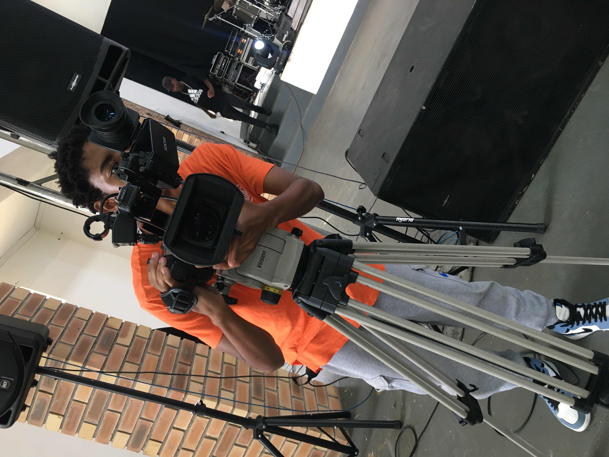
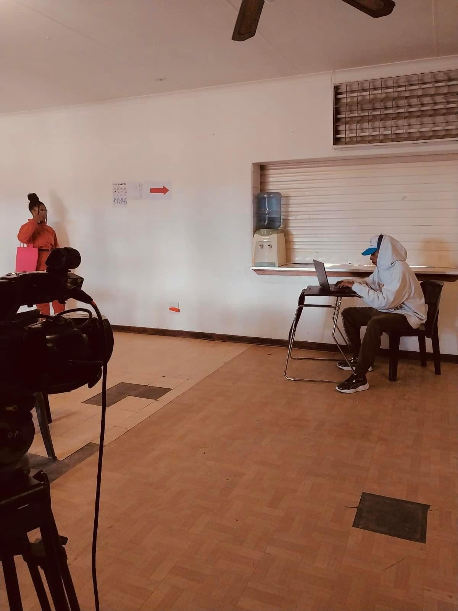
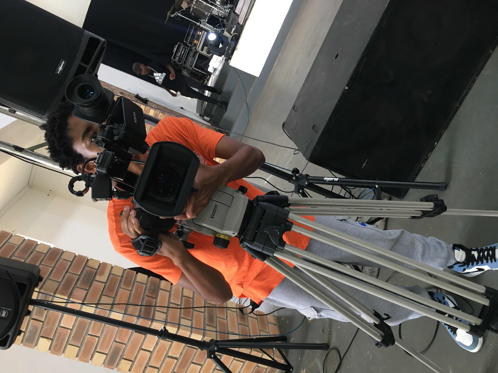
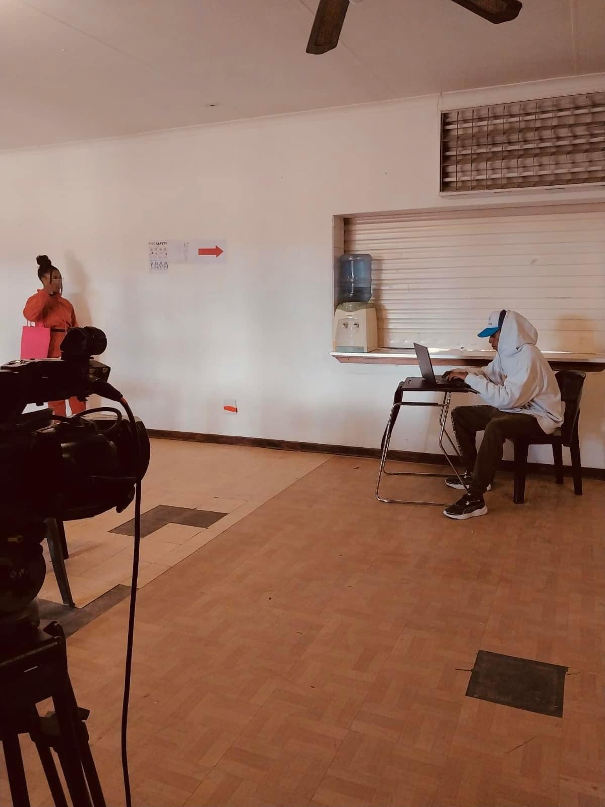

My Journey
My coding journey began three years ago, driven by curiosity and a desire to create. I started teaching myself programming by watching countless YouTube tutorials, immersing myself in the basics and building small projects to reinforce my learning. Eager to deepen my understanding, I enrolled in Codecademy, where I tackled JavaScript first, followed by HTML and then CSS. This structured approach gave me a solid foundation in web development.
Today, I am a proud student at ALX Africa, where I am remastering and expanding my skills. ALX has introduced me to new tools and concepts, such as the command line, Git, and GitHub, which have become essential in my workflow. I have also learned to leverage AI as a powerful tool for productivity and creativity. Through empathy and a deep understanding of users, I strive to deliver user-friendly and impactful digital experiences.
In my first few months at ALX, I was selected as a team leader, guiding my team to successfully complete our projects. I also participated in a pitch video, which I shot and compiled for the team, showcasing our collaborative spirit and technical achievements. My journey at ALX has also exposed me to machine learning, algorithms, and the importance of branding yourself as a junior developer through effective social media management.
Pitch video for ALX team project
The name bblack-jew ENTj is more than just a brand—it's a story. "Black Jew" was a nickname given to me by my former math teacher, who encouraged me to create wealth and pursue excellence, saying, "As a Jew, it is a must that you create wealth because you like nice things." The "ENT" stands for entertainment, while "ENTj" also reflects a unique personality type, blending creativity and leadership.
My background is diverse. I spent over two years as a shoe salesman at Studio 88 (Atterbury), where I developed strong communication and sales skills. Coding, however, has always been a constant presence, even as I explored other passions. I learned photography and videography at Empower NPO, collaborating with them and Gearhouse on partnership gigs for over a year. Together, we worked on events in Polokwane, Centurion, Pretoria, and Garsfontein, gaining hands-on experience in media production and event coverage.
 



My journey is a blend of self-taught grit, formal learning, teamwork, and creative exploration. I am committed to continuous growth and to using my skills to make a positive impact—whether through code, media, or leadership.
Back to About